Inicio › Routers y redes
Routers y redes: precios en Honduras y dónde comprar más barato
176 productos de 6 tiendas, con el precio de cada una. Actualizado el 28 de noviembre de 2026.
Routers y redes REDRouters y redes Tp-LinkRouters y redes CUDYRouters y redes MercusysRouters y redes StarlinkRouters y redes TplinkRouters y redes LinksysRouters y redes PointRouters y redes RangeRouters y redes HikvisionRouters y redes TelefonoRouters y redes PatchRouters y redes VPN
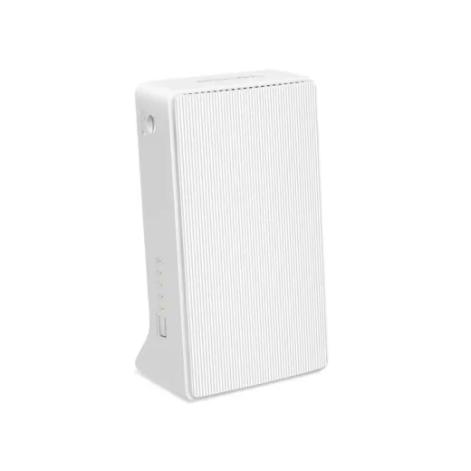
Router Mercusys 300Mbps 4g Lte Cat4 2.4Ghz Ac1200 Dual BandL 1,495En 2 tiendas · más barato en Sycom Repetidor Tp-Link 300mbps 2.4ghz D/Pared Access Point Tl-Wa850re 2 Antenas InterL 545En 2 tiendas · más barato en Acosa
Repetidor Tp-Link 300mbps 2.4ghz D/Pared Access Point Tl-Wa850re 2 Antenas InterL 545En 2 tiendas · más barato en Acosa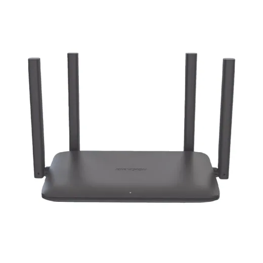
Router Hikvison 1200Mbps Inalambrico 2.4Ghz Wifi 6 Ds-3Wr15XL 1,095En Acosa Router Cudy Gpon 2488Gbps 5Ghz AC1200 Dual BandL 1,095En Acosa
Router Cudy Gpon 2488Gbps 5Ghz AC1200 Dual BandL 1,095En Acosa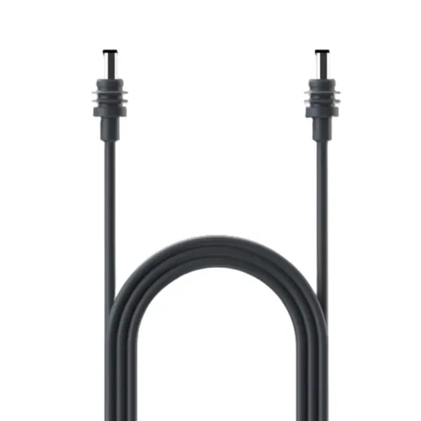
Starlink Mini DC Power Cable 15ML 1,099En Diunsa Switch 5 Puertos 10/100 Mbps C/Poe+ 4 Puertos Tp-Link P/Escritorio Tl-Sf1005PL 1,119En Acosa
Switch 5 Puertos 10/100 Mbps C/Poe+ 4 Puertos Tp-Link P/Escritorio Tl-Sf1005PL 1,119En Acosa Repetidor Tp-Link 300Mbps 2.4Ghz D/Pared Access Point Re315L 1,045.01En Acosa
Repetidor Tp-Link 300Mbps 2.4Ghz D/Pared Access Point Re315L 1,045.01En Acosa Repetidor Cudy 1200Mbps Dual Band 5Ghz Wifi 6 Re1500L 1,045.01En Acosa
Repetidor Cudy 1200Mbps Dual Band 5Ghz Wifi 6 Re1500L 1,045.01En Acosa Repetidor Tp-Link 750Mbps Dual Band 2.4Ghz D/Pared Re205 Ac750L 1,045.01En Acosa
Repetidor Tp-Link 750Mbps Dual Band 2.4Ghz D/Pared Re205 Ac750L 1,045.01En Acosa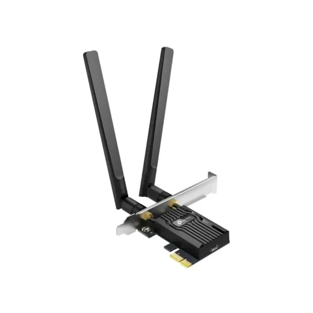
Tarjeta de Red PCIE TPLINK Archer TX55E AX3000 Dual Band + Bluetooth 5.3L 1,150En Sycom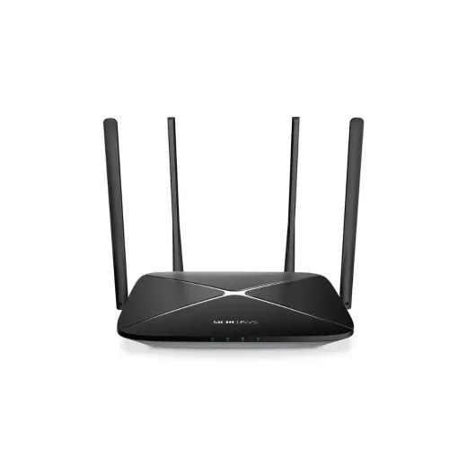
Router Inalambrico MERCUSYS AC12G AC1300 Dual BandL 1,150En Sycom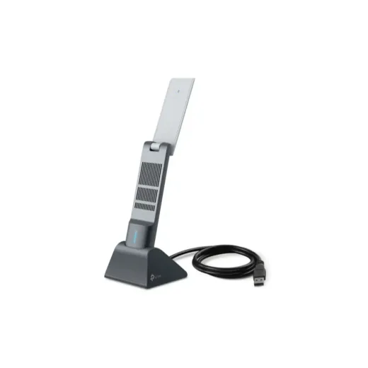
Tarjeta de Red USB Wifi TP-Link Archer ARCHER TX50UH AX3000 Dual BandL 1,150En Sycom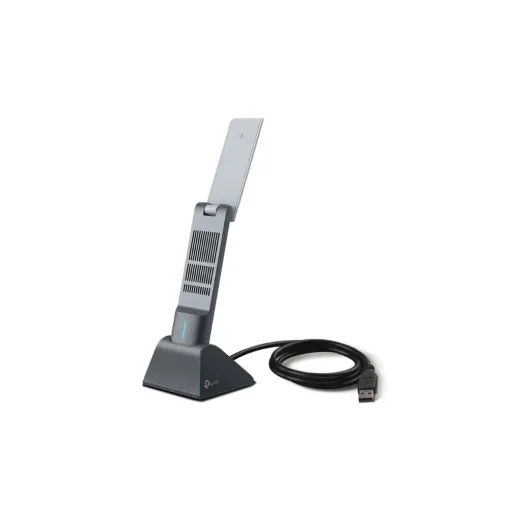
Tarjeta de Red USB Wifi TPLINK Archer TX20UH AX1800L 1,150En Sycom Switch 5 Puertos 10/100/1000 Mbps Gigabit C/Poe+ Cudy 120WL 1,184.99En Acosa
Switch 5 Puertos 10/100/1000 Mbps Gigabit C/Poe+ Cudy 120WL 1,184.99En Acosa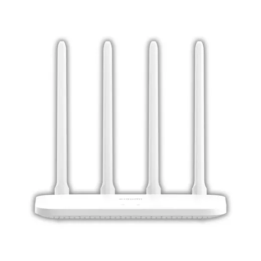
Router Xiaomi AC1200/Doble NucleoL 1,190En Diunsa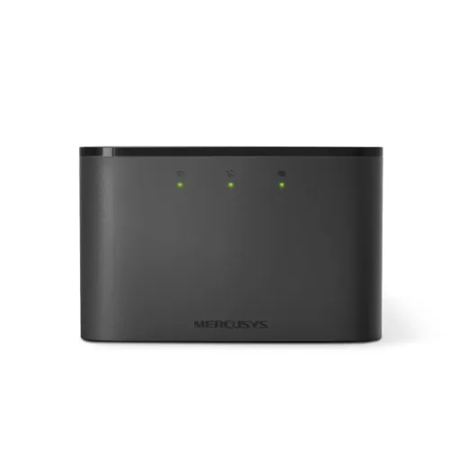
Router Inalámbrico Portátil MERCUSYS 4G LTE · 150 Mbps 2, 4 GHz Batería 2200 mAh MT110L 1,195En Sycom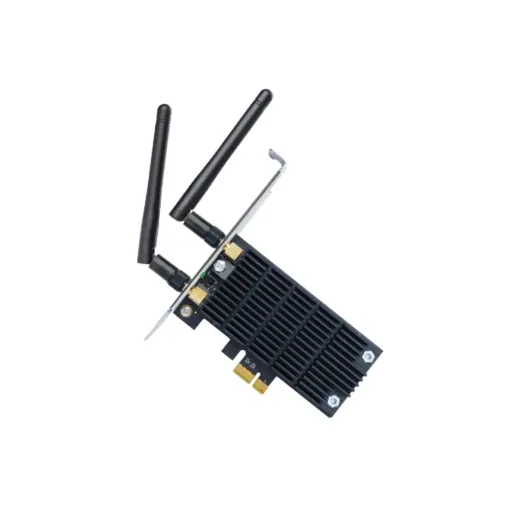
Tarjeta de Red PCIE TPLINK Archer T6E AC1300 Dual BandL 1,200En Sycom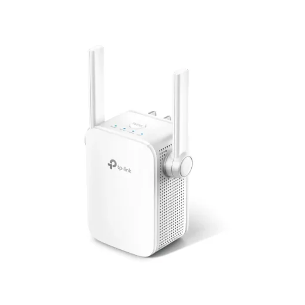
Range Extender TP-Link RE305 AC1200L 995En Sycom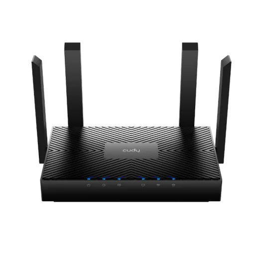
Router Cudy 2976Mbps Gigabit 5Ghz Ax3000 Dual BandL 1,225En Acosa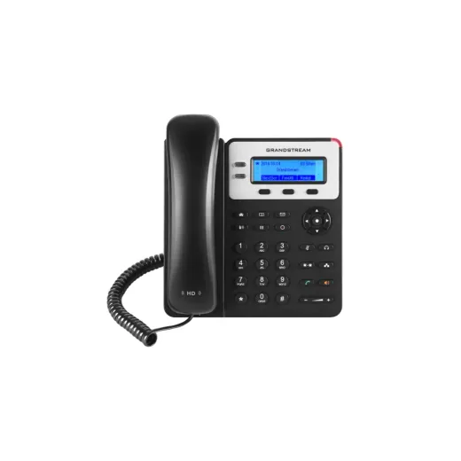
Telefono IP Grandstream GXP1625 2 LINEAS 10/100 POEL 1,250En Sycom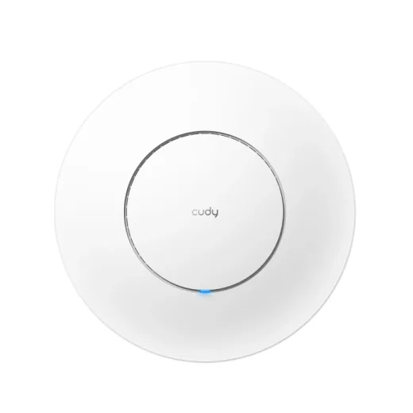
Access Point Cudy 867Mbps Gigabit 5Ghz Dual Band Ac1200L 1,255En Acosa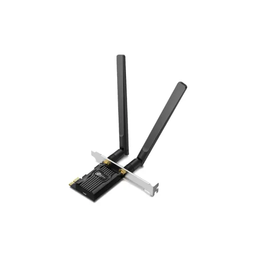
Tarjeta de Red PCIE Wifi + Bluetooth 6.0 TPLINK Archer TX20E AX1800L 950En Sycom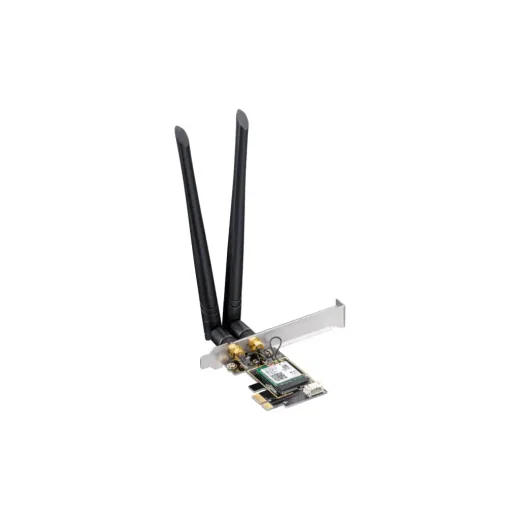
Tarjeta de Red PCIE Inalambrico Cudy WE3000 AX3000 Dual Band Wifi 6E + Bluetooth 5.2L 950En Sycom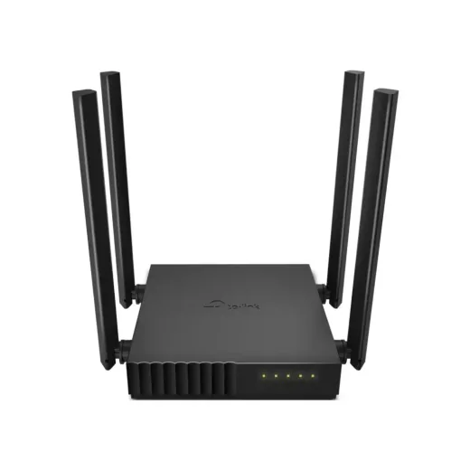
Router Inalambrico TPLINK Archer C50 AC1200 Dual BandL 945En Sycom Router Tp-Link 1200mbps Inalambrico 2.4ghz Ac1200 Dual Band 4 Antenas ExterL 939En Acosa
Router Tp-Link 1200mbps Inalambrico 2.4ghz Ac1200 Dual Band 4 Antenas ExterL 939En Acosa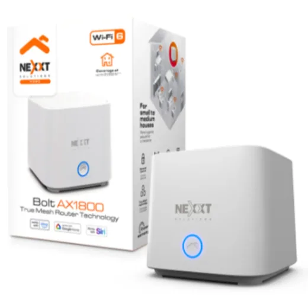
Router Nexxt Home/Bolt Mesh/Wi-fiL 1,290En Diunsa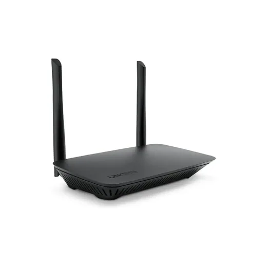
Router Inalambrico Linksys LN3101-LA AC1200L 1,295En Sycom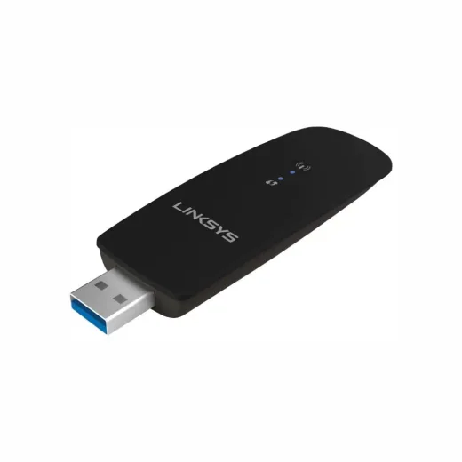
Tarjeta de Red USB Wifi 5 Linksys WUSB6300 AC1200 Dual BandL 1,295En Sycom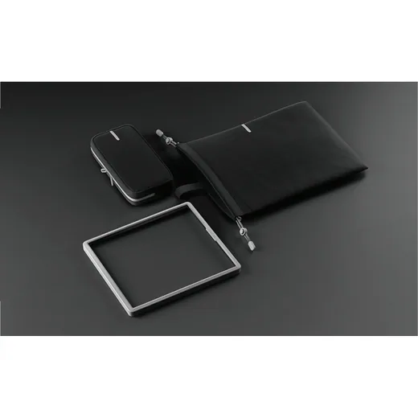
Starlink Mini Travel KitL 1,299.01En Diunsa Switch 6 Puertos 10/100 Mbps C/Poe+ 4 Puertos Tp-Link Para Escritorio Tl-Sf1006PL 1,299.01En Acosa
Switch 6 Puertos 10/100 Mbps C/Poe+ 4 Puertos Tp-Link Para Escritorio Tl-Sf1006PL 1,299.01En Acosa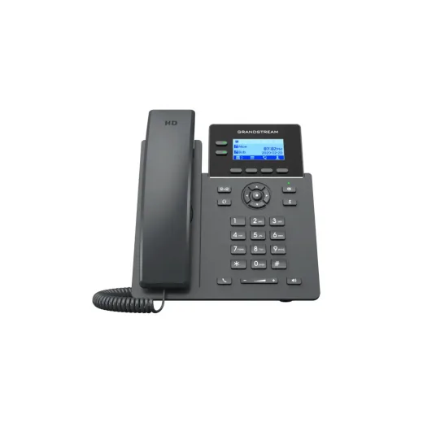
Telefono IP Grandstream GRP-2602G GIGABIT 2 LineasL 1,300.01En Sycom Range Extender TPLINK RE205 AC750 WifiL 920En Sycom
Range Extender TPLINK RE205 AC750 WifiL 920En Sycom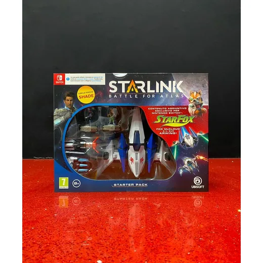
Switch Starlink Battle for Atlas Starter PackL 900En Game Station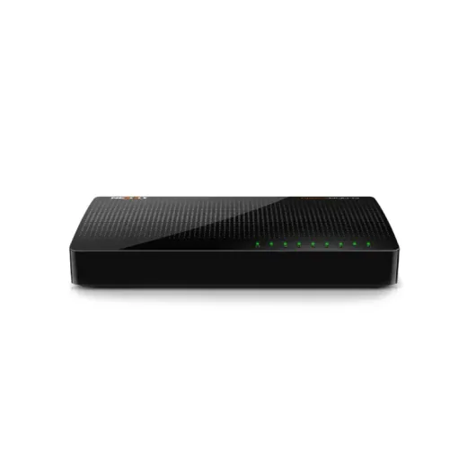
Switch 8 Puertos 10/100 Naxos800g Para Escritorio Nexxt Asbdt084u2L 885.01En Acosa Switch 16 Puertos 10/100 Mbps Tp-Link De Escritorio Tl-Sf1016DL 869En Acosa
Switch 16 Puertos 10/100 Mbps Tp-Link De Escritorio Tl-Sf1016DL 869En Acosa Router Tp-Link 750Mbps Inalambrico 5Ghz Ac750 Dual BandL 869En Acosa
Router Tp-Link 750Mbps Inalambrico 5Ghz Ac750 Dual BandL 869En Acosa Access Point Tp-Link 450Mbps 2.4Ghz Tl-Wa901NL 866.61En Acosa
Access Point Tp-Link 450Mbps 2.4Ghz Tl-Wa901NL 866.61En Acosa Patch Panel Modular Cat 6 24Pto Rj45 1U NitrotelL 859En Acosa
Patch Panel Modular Cat 6 24Pto Rj45 1U NitrotelL 859En Acosa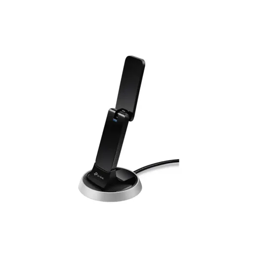
Tarjeta de Red USB Wifi TPLINK Archer T9UH AC1900 Dual BandL 1,400En Sycom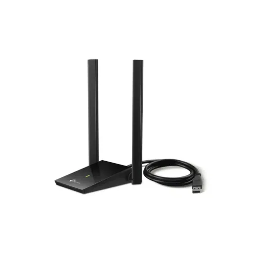
Tarjeta de Red USB Wifi TP-Link Archer T4U PLUS AC1300 Dual BandL 850En Sycom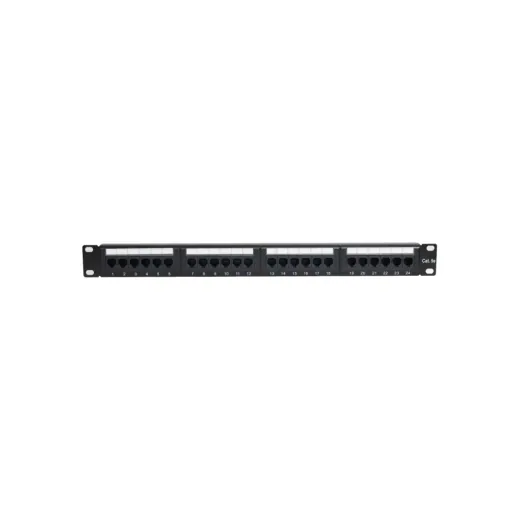
Patch Panel de 24 Puertos Cat5e Vorttek VK-PP5002L 850En Sycom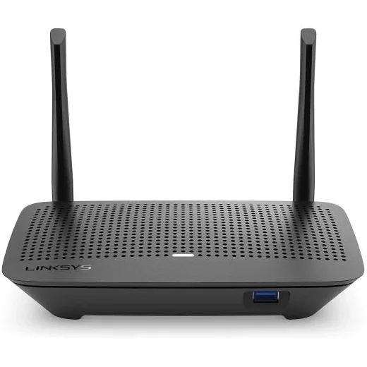
Router Linksys EA6350-4B 1000 Pies CoberL 845En Lady Lee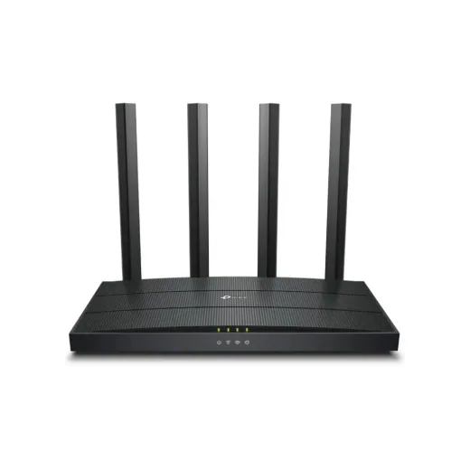
Router Inalambrico TPLINK Archer AX12 AX1500 Dual Band Wifi 6 N/DL 1,485En Sycom Router Tp-Link 1201Mbps Inalambrico 5Ghz Ax1500 Dual Band Wifi 6L 1,495En Acosa
Router Tp-Link 1201Mbps Inalambrico 5Ghz Ax1500 Dual Band Wifi 6L 1,495En Acosa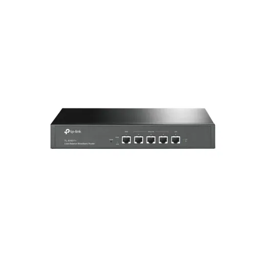
Router Alambrico TPLINK Balance Broadband TL-R480T+ RackeableL 1,495En Sycom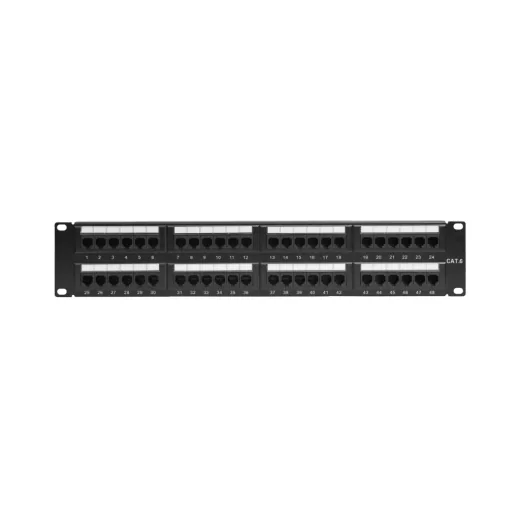
Patch Panel de 48 Puertos Cat6 Vorttek VK-PP6003L 1,500En Sycom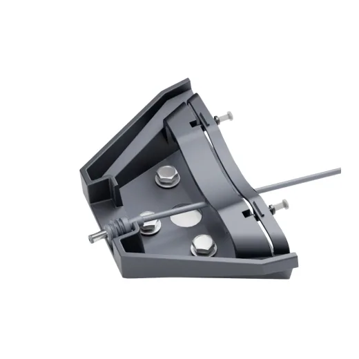
Starlink Mini Mobility MountL 799En Diunsa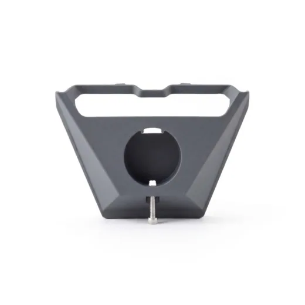
Starlink Mini Pipe Adapter And Flat MounL 799En Diunsa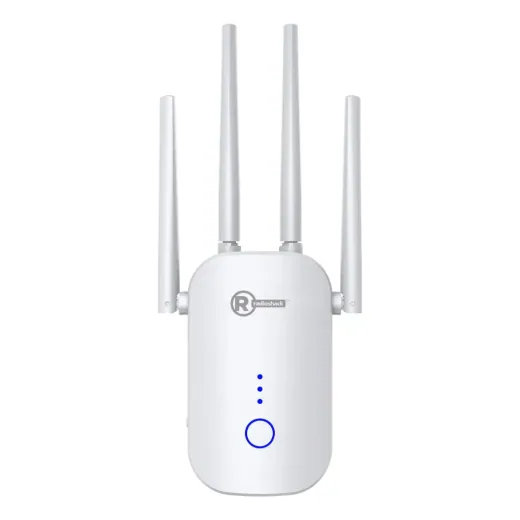
Repetidor Wifi RadioShack 1200 MBPS 2505011L 797En RadioShack- Access Point Cudy 867Mbps Inalambrico 5Ghz +PoE Gigabit Ac1200L 1,505.01En Acosa
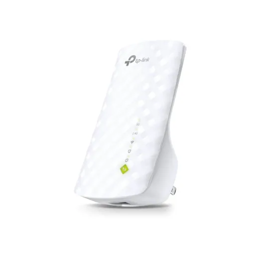
Range Extender TPLINK RE200 AC750L 775En Sycom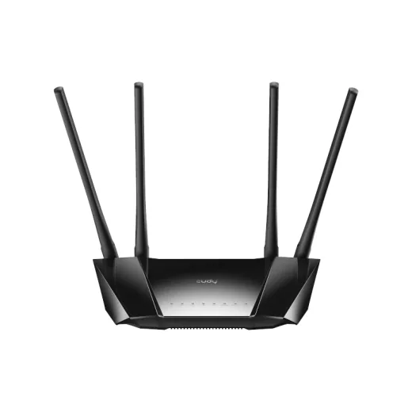
Router Cudy 4G 300Mbps Inalambrico 2.4Ghz N300 Dual BandL 1,559En Acosa Repetidor Tp-Link 1500Mbps Dual Band 5Ghz Dual Band Ax1500L 1,569En Acosa
Repetidor Tp-Link 1500Mbps Dual Band 5Ghz Dual Band Ax1500L 1,569En Acosa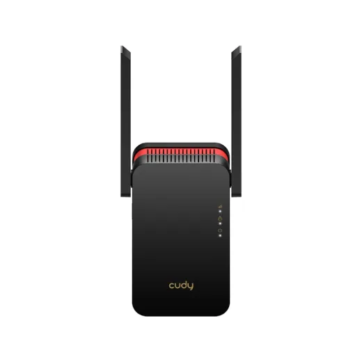
Repetidor Cudy 2402Mbps Dual Band 5Ghz Wifi 6 Ax3000L 1,595En Acosa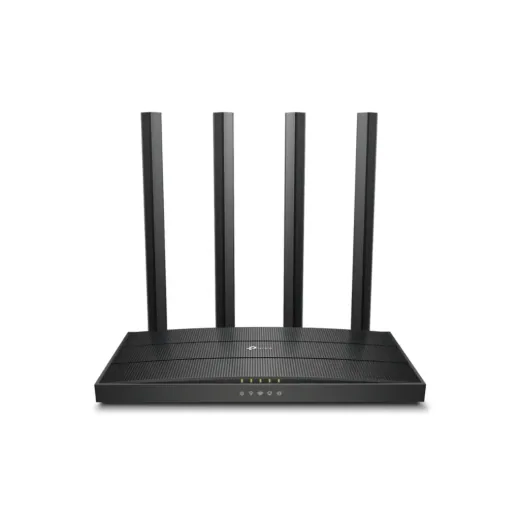
Router inalambrico TPLINK Archer C80 AC1900 MU-MIMO N/DL 1,595En Sycom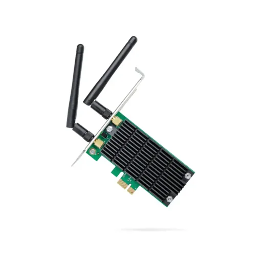
Tarjeta de Red PCIE Wifi TPLINK Archer T4E 1200MbpsL 750En Sycom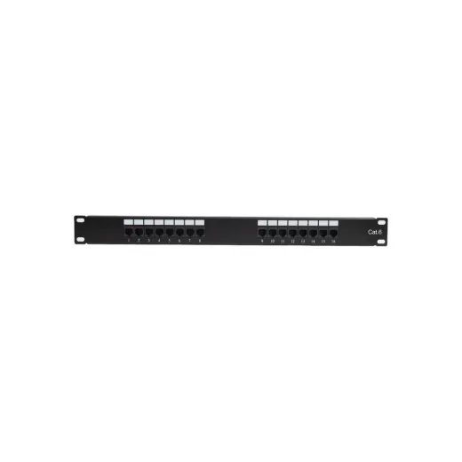
Patch Panel de 16 Puertos Cat6 Vorttek VK-PP6001L 750En Sycom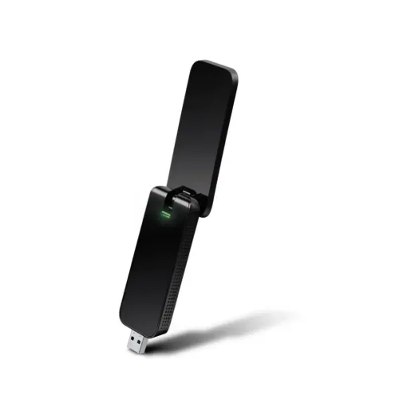
Tarjeta de Red USB Wifi TPLINK Archer T4U AC1300 Dual BandL 750En Sycom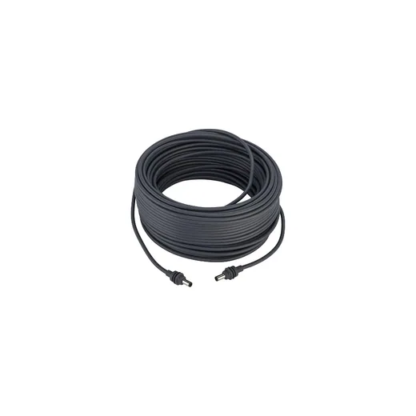
Starlink Mini DC Power Cable 30ML 1,598.99En Diunsa Router Tp-Link 1900Mbps Inalambrico-N 2.4Ghz Doble Banda AC1900 Mu-MimoL 1,644.99En Acosa
Router Tp-Link 1900Mbps Inalambrico-N 2.4Ghz Doble Banda AC1900 Mu-MimoL 1,644.99En Acosa Repetidor Cudy 867Mbps Dual Band 5Ghz Para Interior Ac1200L 715En Acosa
Repetidor Cudy 867Mbps Dual Band 5Ghz Para Interior Ac1200L 715En Acosa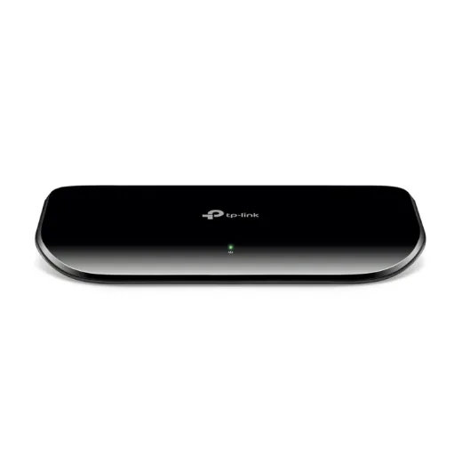
Switch 8 Puertos 10/100/1000 Mbps Tp-Link P/Escritorio Tl-Sg1008dL 709En Acosa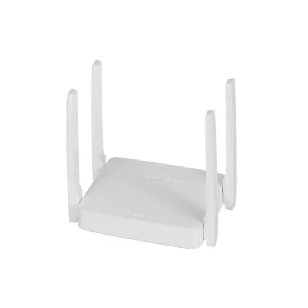
Router Mercusys 300Mbps Inalambrico 2.4Ghz Ac1200 Dual Band Ac10L 709En Acosa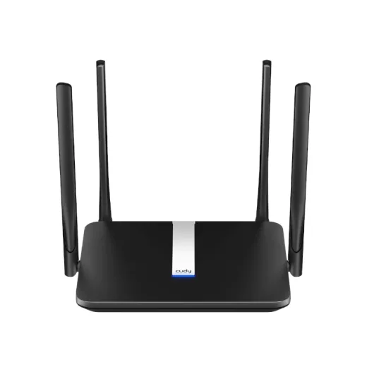
Router Cudy 867Mbps Inalambrico 5Ghz Ac1200 Nano-Sim Dual BandL 1,695En Acosa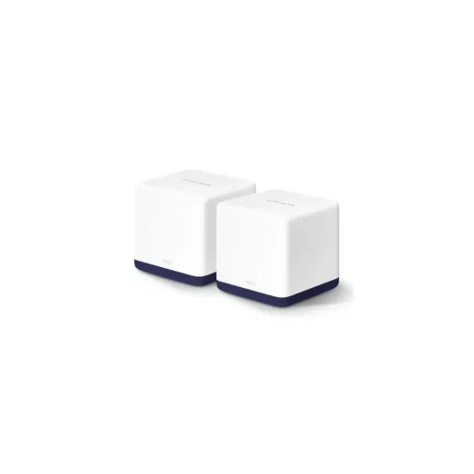
Router Mercusys Mesh Halo H50G(2-pack) AC1900 Dual BandL 1,725En Sycom- Adaptador Bluetooth Usb-C 5.3 Bt501 UgreenL 695En Acosa
 Router Cudy 867Mbps Inalambrico 5Ghz Ac1200 Dual BandL 695En Acosa
Router Cudy 867Mbps Inalambrico 5Ghz Ac1200 Dual BandL 695En Acosa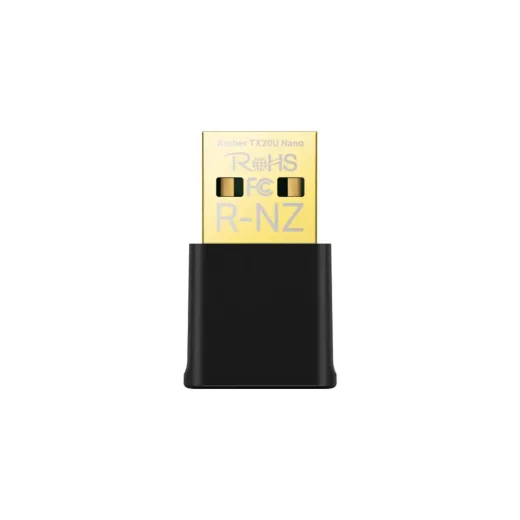
Tarjeta de Red USB Wifi TPLINK Archer TX20U AX1800L 690En Sycom Repetidor Cudy 867Mbps Dual Band 5Ghz Para Exterior Ac1200L 1,745En Acosa
Repetidor Cudy 867Mbps Dual Band 5Ghz Para Exterior Ac1200L 1,745En Acosa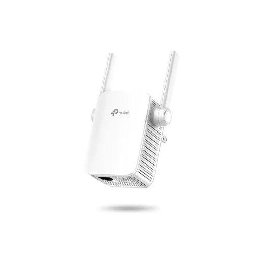
Range Extender TPLINK TL-WA855RE 300MbpsL 675En Sycom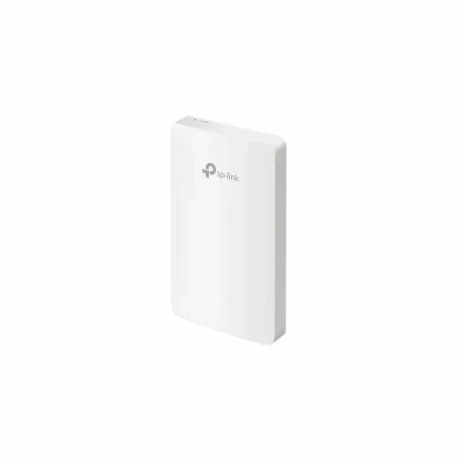
Access Point TPLINK MU-MIMO AC1200 EAP235-WALL OmadaL 1,795En Sycom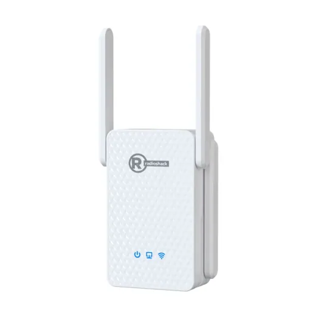
Repetidor Wifi RadioShack 3000 MBPS 2505010L 1,797En RadioShack- Patch Panel de 16 Puertos Cat5e Vorttek VK-PP5001L 650En Sycom
- Router Cudy 1200Mbps Inalambrico 5Ghz Ac1200 Dual BandL 645En Acosa
- Switch 8 Puertos 10/100/1000 Mbps Tp-Link Para Escritorio Ls1008GL 645En Acosa
 Router Tp-Link 300mbps Inalambrico 2.4ghz Dual Band Tl-Wr841n 2 Antenas ExterL 645En Acosa
Router Tp-Link 300mbps Inalambrico 2.4ghz Dual Band Tl-Wr841n 2 Antenas ExterL 645En Acosa- Router Linksys Velop MeshL 1,895En Lady Lee
- Starlink Standard Pipe AdapterL 1,899En Diunsa
- Switch 6 Puertos 10/100 Mbps C/Poe+4 Puertos Cudy P/Escritorio Fs1006PL 625En Acosa
- Router Inalambrico MERCUSYS MR70X AX1800 Dual Band Wifi 6L 1,950En Sycom
- Router TPLINK Mesh Deco X10 AX1500 Wifi 6 (1 Pieza)L 1,995En Sycom
- Switch 8 Puertos 10/100/1000 Mbps Cudy Gigabit Metal Gs108L 595En Acosa
- Switch 3 Puertos Hdmi 4K Cm332 UgreenL 595En Acosa
- Tarjeta de Red USB Wifi TPLINK Archer T3U Nano AC1300 Dual BandL 595En Sycom
- Router Mercusys N MW330HP 2.4 GHz · 3 x Antenas 7dbi · 300Mbps · 3 x LAN 10/100 Mbps · 1 x WAN 10/100 MbpsL 595En Sycom
- Telefono Ip Empresarial Hp Poly Edge B30 Pantalla LcdL 2,045En Acosa
- Range Extender TP-Link RE605X AX1800 WiFi 6L 2,070En Sycom
- Tarjeta de Red PCIE TPLINK Archer T2E AC600 Dual BandL 575En Sycom
- Range Extender Mercusys MW300RE · 300 Mbps · 3 x Antenas MIMOL 575En Sycom
- Starlink Mini Wall MountL 2,099En Diunsa
- Tarjeta de Red USB Wifi TPLINK Archer T3U Mini AC1300 Dual BandL 560En Sycom
- Router Inalambrico TPLINK Archer AX23 Wifi 6 AX1800L 2,150.01En Sycom
- Access Point Cudy 867Mbps Gigabit 5Ghz Dual Band Para Exterior Ac1200L 2,195.01En Acosa
- Router TPLINK Mesh Deco M5 AC1300 (1 Pieza)L 2,195.01En Sycom
- Switch 2 Puertos Hdmi 8K Bidireccional Xha-440 XtechL 545En Acosa
- Access Point Mercusys 300mbps 2.4ghz Mw300reL 545En Acosa
- Router Mercusys 300mbps Inalambrico-N 2.4ghz Mw325rL 539.01En Acosa
- Access Point TPLink MU-MIMO AC1200 EAP225 WiFi 5 Indoor/Outdoor OMADAL 2,250En Sycom
- Starlink Mini Pivot MountL 2,299En Diunsa
- Access Point TP-Link OMADA EAP615-WALL AX1800 WIFI 6L 2,300En Sycom
- Tarjeta de Red USB Wifi TPLINK TL-WN8200ND 300Mbps 2.4GhzL 495.01En Sycom
- Switch 8 Puertos 10/100/1000 Mbps Mercusys P/Escritorio Ms108gL 494.99En Acosa
- Router Tp-Link 2402Mbps Inalambrico 5Ghz Ax3000 Dual Band Wifi 6L 2,429En Acosa
 Repetidor Tp-Link 1200Mbps 2.4Ghz Deco E4Ac1200L 2,445En Acosa
Repetidor Tp-Link 1200Mbps 2.4Ghz Deco E4Ac1200L 2,445En Acosa- Router Cudy 300Mbps 2.4Ghz N300 Dual BanbL 485En Acosa
- Router Mercusys 300mbps Inalambrico-N 2.4ghz Mw305rL 485En Acosa
- Switch 24 Puertos NexxtL 2,495.01En Acosa
- Access Point TPLINK MU-MIMO AC1750 EAP245 OmadaL 2,495.01En Sycom
- Tarjeta de Red PCIE Wifi TPLINK TL-WN881ND 300MbpsL 460En Sycom
- Switch 5 Puertos 10/100/1000 Mbps Gigabit Tp-Link Para Escritorio Ls1005GL 445En Acosa
- Router Inalambrico TPLINK Archer AX53 AX3000 Dual Band Wifi 6L 2,695En Sycom
- Tarjeta de Red USB Wifi TPLINK Archer T2U Mini AC 600 Dual BandL 435En Sycom
- Access Point Cudy AP3000 AX3000 Gigabit Wireless para ExteriorL 2,795.01En Sycom
 Repetidor Tp-Link 3000Mbps Dual Band 5Ghz Dual Band Ax3000L 2,839.01En Acosa
Repetidor Tp-Link 3000Mbps Dual Band 5Ghz Dual Band Ax3000L 2,839.01En Acosa- Tarjeta de Red PCIE 10 Gigbite TPLINK TX401L 2,875En Sycom
- Router Vpn Tplink ER605 OmadaL 2,875En Sycom
- Switch 8 Puertos 10/100/1000 Mbps Cudy Gigabit P/Escritorio Gs108dL 415En Acosa
 Tarjeta de Red USB Wifi TPLINK Archer T2UB Nano AC600 Dual Band + Bluetooth N/DL 415En Sycom
Tarjeta de Red USB Wifi TPLINK Archer T2UB Nano AC600 Dual Band + Bluetooth N/DL 415En Sycom- Switch 5 Puertos 10/100/1000 Mbps Tp-Link P/Escritorio Tl-Sg1005dL 405En Acosa
- Router Linksys HYDRA-6 2000 Pies CobertuL 2,995En Lady Lee
Mostrando 120 de 176. Ver todos con filtros en el comparador.
Preguntas frecuentes
¿Dónde están más baratos los routers y redes en Honduras?
Entre los 2 routers y redes que se venden en 2 o más tiendas, Sycom tuvo el precio más bajo en 1 (50%), según los precios del 28 de noviembre de 2026. Depende del producto: revisa la tabla de cada uno.
¿Cuánto cuestan los routers y redes en Honduras?
Desde L 200. Comparamos 176 productos de 6 tiendas.
¿Qué tiendas comparan?
Sycom, Acosa, Diunsa, Game Station, Lady Lee, RadioShack.